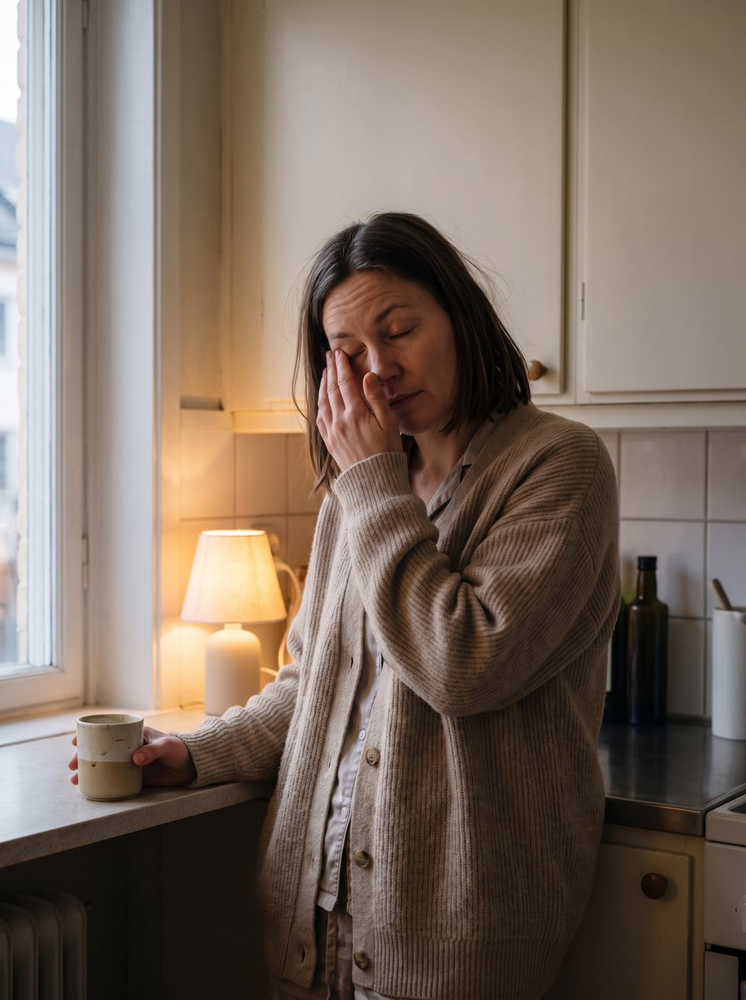
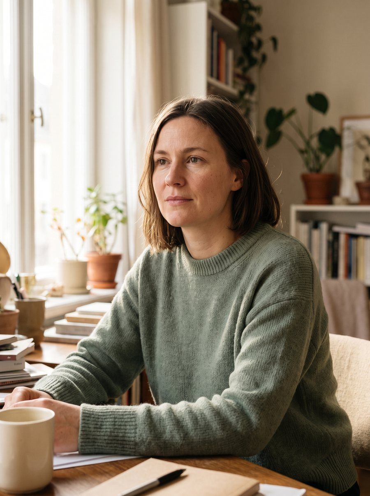
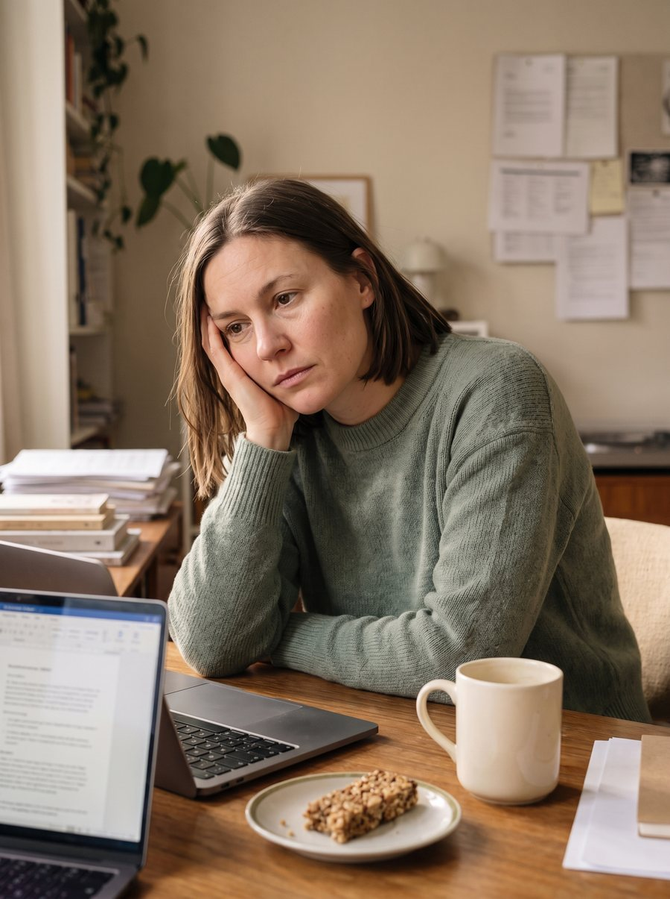
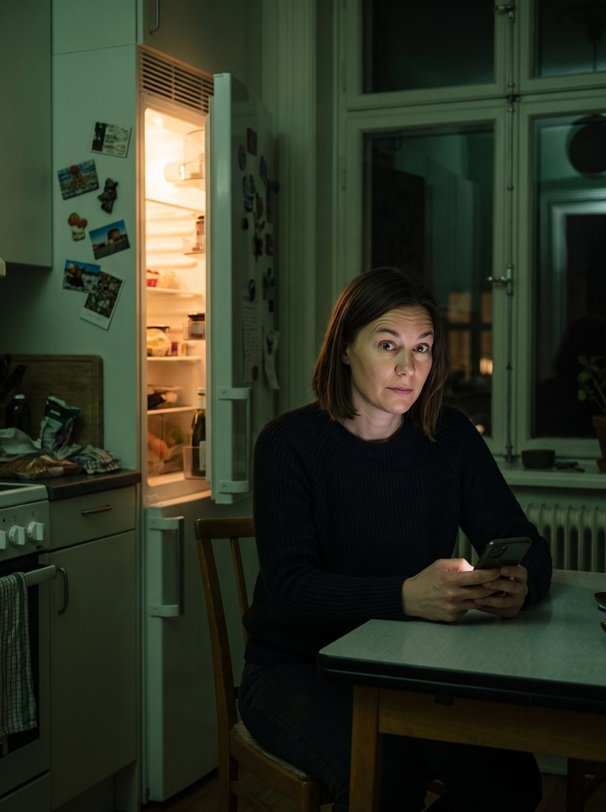
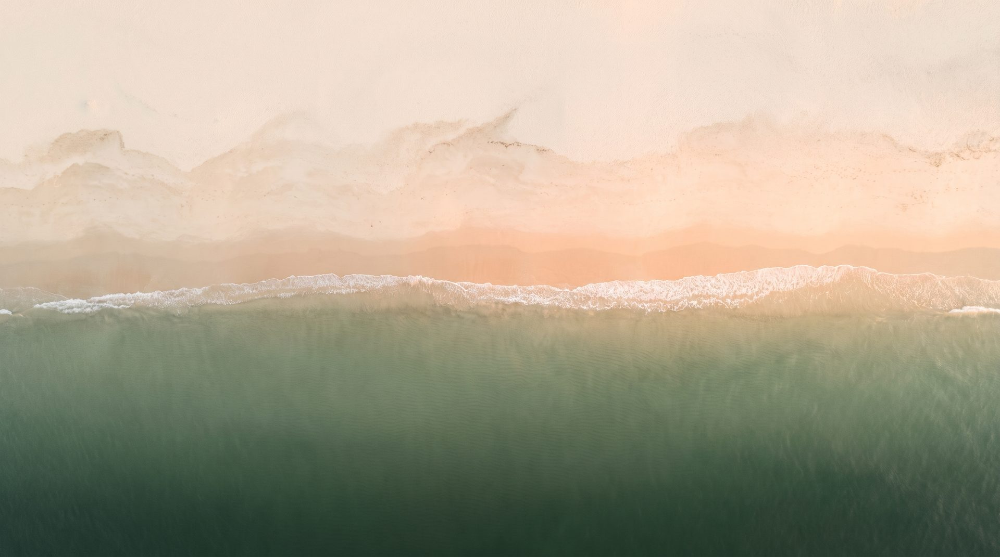

Подъём — как всплытие с глубины. Кофе вместо завтрака, и день уже должен ехать.
К одиннадцати — вроде всё нормально. Это «вроде» и обманывает: разгон часто держится на кофеине, не на ресурсе.
Яма. Ты называешь это ленью и коришь себя. Чаще всего это не лень — это кончилось топливо.
Второе дыхание — ровно тогда, когда пора спать. А завтра всё сначала.
Без запретов, детоксов и силы воли. Сначала понять, на чём именно едет твой день, — потом менять по одной опоре за раз.
2 минуты · без БАДов и запретов · первое наблюдение — бесплатно




Я не прошу верить на слово — ни мне, ни «марафонам стройности». Каждый шаг опирается на исследования и нормы, и ты видишь, на что именно.
Сон, еда, свет, кофе, движение — без дневников на месяц и чувства вины. Достаточно честной картины одной недели.
Утренний кофеиновый разгон, яма после обеда, «второе дыхание» к ночи — у каждого паттерна есть причина в топливе и ритме, а не в характере.
Не «новая жизнь с понедельника», а одна перемена — измеряем эффект, закрепляем, идём дальше. Так изменения переживают месяц и год.

Я не обещаю прилив к дате. Это направления, над которыми работаем — по одной метке за раз, с честным замером «стало/не стало»:
Клинический нутрициолог. Работаю с питанием, ритмом и образом жизни — не с диагнозами и лечением. Там, где нужна медицина, говорю прямо: «это к врачу».
Ответь на несколько вопросов о своём дне — получишь одно честное наблюдение о своём ритме: не диагноз, а точку, с которой начинается разбор.
без карты · для кабинета понадобится только email · ответы анкеты не передаём третьим лицам